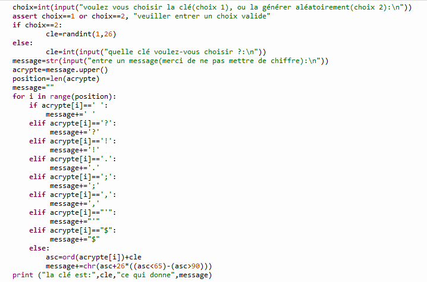

Sommaire
1.Le code de César
1.Histoire
2.Utilisation
2.Le projet python
1.But
2.Zoom sur une partie du projet
3.La réalisation du projet
1.Modus operandi
2.Perspective abandonné
3.Moyens de communications
4.Vidéo récapitulative
Le code de César

Histoire
En cryptographie, le chiffrement par décalage, aussi connu comme le chiffre de César ou le code de César (voir les différents noms), est une méthode de chiffrement très simple utilisée par Jules César dans ses correspondances secrètes (ce qui explique le nom « chiffre de César »). Le texte chiffré s'obtient en remplaçant chaque lettre du texte clair original par une lettre à distance fixe, toujours du même côté, dans l'ordre de l'alphabet. Pour les dernières lettres (dans le cas d'un décalage à droite), on reprend au début. Par exemple avec un décalage de 3 vers la droite, A est remplacé par D, B devient E, et ainsi jusqu'à W qui devient Z, puis X devient A etc. Il s'agit d'une permutation circulaire de l'alphabet. La longueur du décalage, 3 dans l'exemple évoqué, constitue la clé du chiffrement qu'il suffit de transmettre au destinataire — s'il sait déjà qu'il s'agit d'un chiffrement de César — pour que celui-ci puisse déchiffrer le message. Dans le cas de l'alphabet latin, le chiffre de César n'a que 26 clés possibles (y compris la clé nulle, qui ne modifie pas le texte).
lien vers la page wikipediaUtilisation actuel
Le code de César fut la base de la cryptographie et est aujourd'hui utilisé pour des énigme par exemple dans des jouets promotionnels pour enfants. Les livres-jeu emploient souvent cette méthode, avec un décalage de un ou deux dans un sens ou dans l'autre, pour donner des indications sans rendre le jeu trop facile.
Le projet python
But
Le but de ce projet était de réaliser un programme sur l'outils python qui permetrai de choisir, de crypter un texte à partir d'une clé fournie par l'utilisateur, de décrypter un texte à partir d'une clé fournie par l'utilisateuret de décrypter un texte sans connaitre la clé. Ce choix devait pouvoir s'effectuer dans la console et pouvoir reboucler a l'infini jusqu'a ce que l'utilisateur décide de l'arrêter.
Voici la console

Et voici un exemple

Zoom sur une partie du projet
Nous allons maintenant nous pencher sur la fonction décryptage.
Cette fonction vous demande tout d'abord d'entrer la phrase à crypter puis, grace a l'instruction "upper()", toute la chaine de caractère est mise en majuscule. Ensuite, a l'aide de condition "if/elif" la fonction détermine si il s'agit d'un caractère spécial pré-enregistré et,si ce n'est pas le cas la fonction transforme les caractères en leur code hexadécimal en UTF-8 a l'aide de l'instruction "ord()" puis y ajoute la clé. Pour finir, l'instruction "chr()" se charge de retransformer le message en lettre.
voici le code
La réalisation du projet
Modus operandi
Avant de commencer nous avons regarder les différentes chose qui ont déjà été faite pour voir les différentes solutions. Ensuite nous avouns fait des recherches sur les différentes instructions pour pouvoir comprendre leurs buts et ainsi savoir si nous allions les uttiliser. Ensuite nous avons commencer le programme par sa fonction première, c'est a dire crypter. Ensuite nous avons réiterer le processus pour les fonctions décryptantes en réutilisant le corps de la fonction précédante, le code étant en effet simillaire. Ensuite nous avous chercher les différents bug présent dans le programme pour les corriger. Puis, pour finir, nous avons mis le programme en forme et créé l'interface permettant d'interagir.
Perspective abandonné
Nous aurions voulu pouvoir créé une interface graphique qui aurait permis une meilleur ergonomie du programme. Mais, après avoir rechercher comment faire puis avoir essayer, nous nous somme rendu compte que pour une raison obscur, la bibliothèque qui permettait de la réaliser ne fonctionnait tout simplement pas.
Moyens de communication
Pour communiquer lors de ce projet nous avons utiliser Discord et n'ayant pas encore apris a nous servir de git et github nous nous somme envoyer les différentes versions du projet ce qui n'était pas très pratique.